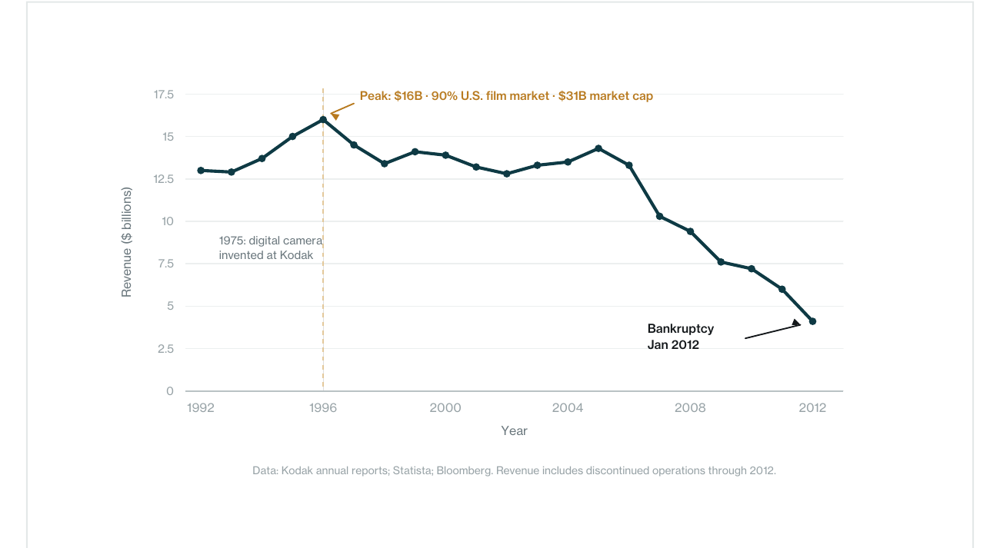
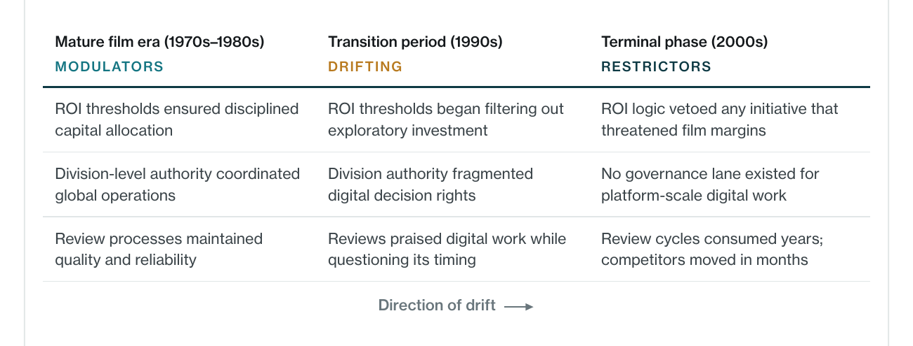
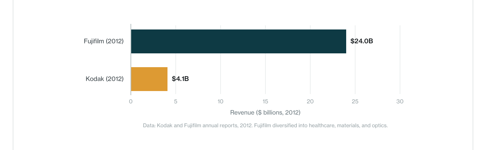
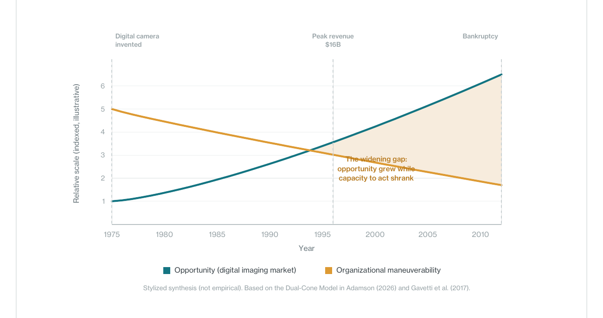
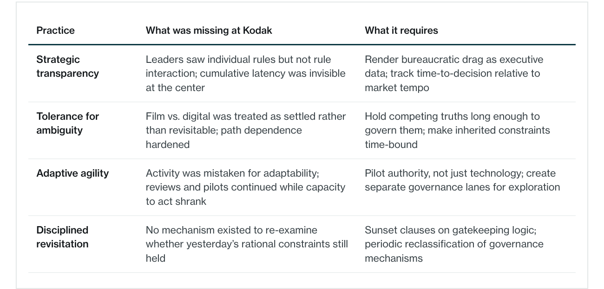

In 1975, a Kodak engineer built the world’s first digital camera. In 1996, Kodak controlled 90 percent of the U.S. film market, employed over 140,000 people, and carried a market capitalization exceeding $31 billion. In 2012, the company filed for Chapter 11 bankruptcy. The popular explanation is complacency. The evidence tells a different story.
This paper argues that Kodak’s collapse was driven in significant part by unstewarded bureaucratic governance – structures that had once sustained excellence but drifted, unsteered, into mechanisms that prevented the organization from acting on what it already knew.
Kodak saw the future but could not make room for it. Digital initiatives were required to justify themselves using assumptions optimized for a mature film empire. Governance designed to protect divisional stability functioned as a veto structure against transformative investment.
Governance mechanisms drifted from modulators to restrictors. ROI thresholds, capital controls, and review processes that once stabilized quality became the primary barriers to adaptation. The drift was gradual, unmonitored, and never corrected.
Opportunity expanded while organizational capacity narrowed. As the digital market grew, Kodak’s maneuverability shrank. By the time leadership attempted a pivot, the muscles required for rapid adaptation had atrophied.
The paper concludes with a diagnostic framework identifying the governance stewardship practices whose absence allowed Kodak’s administrative systems to become the obstacle.
01.Kodak saw the future but could not make room for it
The invention that started a 37-year delay
In 1975, Kodak engineer Steven Sasson built a prototype digital camera weighing nearly eight pounds, producing grainy images stored on cassette tape. The executives who saw the demonstration understood its significance. Kodak was not blind to digital photography – its leaders recognized the trajectory earlier than almost any major incumbent (Gavetti et al., 2017).
That recognition initiated a process that would suffocate the future Kodak had seen. Rather than rejecting digital imaging, Kodak studied it carefully – routing proposals through review channels, modeling scenarios, assessing risk. The question was never whether digital would matter, but how it could fit inside a company whose margins and incentive systems were built around chemical film (Lucas & Goh, 2009).
Digital initiatives were evaluated against existing performance criteria. How would this affect film sales? Which division would absorb the risk? Each question was individually sensible. Together, they formed a bureaucratic gate that no transformative innovation could pass through without neutralizing its disruptive potential (Gavetti et al., 2017).

Innovation permitted – but only if it behaved politely
Reviews praised technical excellence while questioning timing. Executives acknowledged film’s eventual erosion while insisting acceleration was premature. Digital projects were encouraged to proceed – slowly, cautiously, within structures calibrated for mature manufacturing (Tripsas & Gavetti, 2000).
At no point did Kodak’s bureaucracy issue a definitive rejection. It did not need to. By requiring digital initiatives to justify themselves using the logic of film, it transformed governance into delay. What appeared internally as prudence functioned structurally as paralysis (Leonard-Barton, 1992).
02.How modulators became restrictors
The governance that once served excellence became the barrier
Kodak’s bureaucracy was not initially dysfunctional. In its mature era, many mechanisms functioned as modulators – stabilizing quality, coordinating global manufacturing, protecting reliability at scale. The failure was not their existence but the absence of a process to reclassify them as conditions changed.
Over time, modulators drifted into restrictors. ROI expectations became veto points for exploratory work. Capital controls became friction against iteration. Decision rights built for divisional coherence became barriers to cross-boundary investment. Internally coherent governance became externally misfit (Leonard- Barton, 1992; Tripsas & Gavetti, 2000).

The Fujifilm counterfactual
Both Kodak and Fujifilm faced the same disruption. Both recognized the threat to film. But Fujifilm’s governance permitted – and eventually demanded – diversification into healthcare, advanced materials, and optics. By 2012, Fujifilm reported $24 billion in revenue. Kodak, having never created a governance lane for transformation at scale, reported $4.1 billion and filed for bankruptcy.

03.The widening gap between opportunity and capacity
Maneuverability did not vanish overnight. It narrowed as approvals accumulated, decision rights fragmented, and incentives reinforced caution. Engineers built prototypes. Learning occurred. But learning did not translate into action at scale (Weick, 1995).
Leaders experienced constant motion – reviews, pilots, speeches about disruption – and mistook that activity for adaptation. Meanwhile, Canon and Sony experimented aggressively. Apple approached photography as a software and ecosystem problem. They failed quickly, learned openly, and scaled decisively (Tripsas & Gavetti, 2000).

By the time Kodak attempted a decisive pivot, employees who once believed digital could be Kodak’s future had learned that pushing too hard triggered more review, more delay. Innovation pathways had been choked so thoroughly that when leadership tried to redirect, there was little maneuverability left.
Other contributing factors
Bureaucratic governance failure was not the only factor, but it was the central mechanism through which other pressures became fatal. The razor-and-blade model created incentives to delay transition. A price war with Fujifilm eroded margins. The $900 million Polaroid patent judgment reflected a culture of protection over innovation. Later bets on printers and blockchain arrived too late. Each of these mattered – but each operated within, and was amplified by, a bureaucratic system that had lost its capacity to distinguish prudent caution from structural paralysis.
04.What governance stewardship would have required
Kodak’s collapse cannot be reversed in retrospect. But the governance failure that produced it can be diagnosed with enough precision to be useful to institutions facing analogous conditions – organizations whose administrative systems may be drifting from enablers to obstacles without anyone formally noticing.

Strategic transparency requires rendering drag as executive data. At Kodak, leaders saw individual rules but not their cumulative interaction – total latency, recurring chokepoints, the gap between internal tempo and market tempo.
Tolerance for ambiguity requires holding competing truths long enough to govern them. Kodak treated film-versus-digital as a sequence of deferrals rather than a named strategic choice. Those deferrals preserved optionality psychologically while eliminating it structurally (Pierson, 2000).
Adaptive agility requires piloting authority, not just technology. Kodak experimented with digital products but never with digital decision rights. Initiatives were forced through film-era governance rather than protected within bounded lanes designed for learning.
Disciplined revisitation requires making inherited constraints time-bound. Kodak had no mechanism for reexamining whether yesterday’s gatekeeping logic still served today’s environment. Without sunset clauses, governance assumptions calcified into permanent barriers.
05.Conclusion
Kodak did not fail because it ignored digital photography. It failed because it could not make room for it inside its own administrative systems. Governance that had once ensured quality and global dominance hardened around assumptions that no longer held. Approval mechanisms designed to manage risk eliminated the organization’s ability to take it.
When Kodak filed for bankruptcy in 2012, the outcome appeared sudden. In reality, maneuverability had reached zero years earlier. What remained was operational momentum without strategic freedom – activity without viable choice.
The lesson is not that bureaucracy is dangerous. It is that unstewarded bureaucracy is. Bureaucratic governance requires the same stewardship as any other strategic asset: continuous monitoring, periodic reclassification, and the institutional courage to retire mechanisms that have outlived their purpose. Organizations that fail to steward their bureaucratic systems do not merely become slower. They become structurally unable to act on what they already know.
The institutions most at risk today are not those facing disruption. They are those whose bureaucratic systems have not been examined with the same rigor applied to strategy, technology, or talent. Every organization carries governance mechanisms inherited from an earlier era. The question is whether those mechanisms are being stewarded – or whether they are quietly converting foresight into delay, complexity into drag, and opportunity into a cautionary tale. That question is not retrospective. It is the operating question for any institution serious about converting complexity into opportunity rather than repeating the pattern Kodak could not escape.